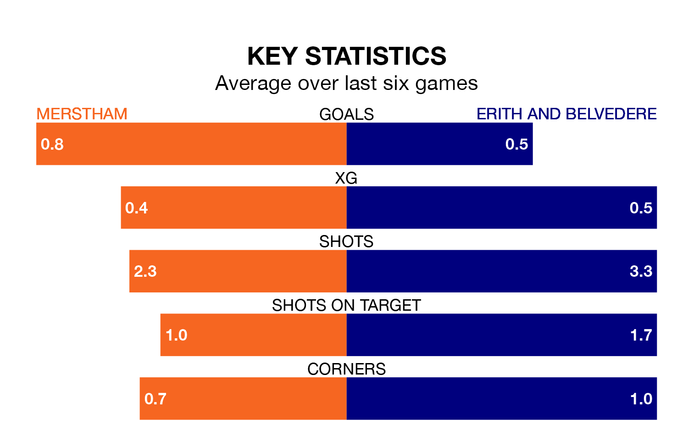

Tuesday's late match sees two relegation candidates play each other, as 17th-ranked Merstham host 19th-placed Erith and Belvedere.
Merstham have picked up 16 points from their first 16 Isthmian League – Division One South East games, with four wins and four draws.
That is four points more than Erith & Belvedere have collected, having won three and drawn three.
Merstham are in bad form in Isthmian League Division One South East, with one win and a draw from their last six games.
But with a win and five losses over that period, Erith & Belvedere's form is even worse – they have taken three points from 18, compared to the hosts' four.
With 10 goals in 19 games so far this season, the away team are the league's lowest scorers with 0.5 goals per game. And they are conceding more than average, letting in 46 goals at a rate of 2.4 per game.
Merstham are also below average scorers, with 1.3 goals per game, compared to a league average of 1.8. They have conceded 2.2 goals per game.
Merstham's last match was on Saturday, a 1-0 loss against Littlehampton Town.
Erith & Belvedere lost 2-0 against Horndean last time out, also on Saturday.
Updated: 11:31, 09/01/24